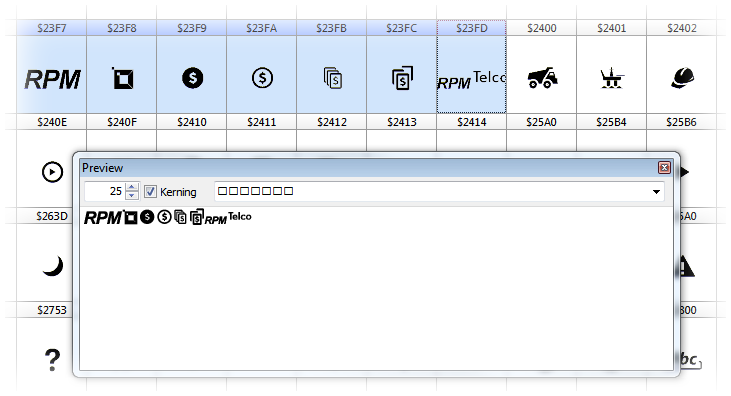
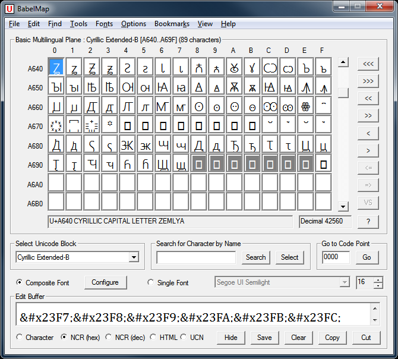
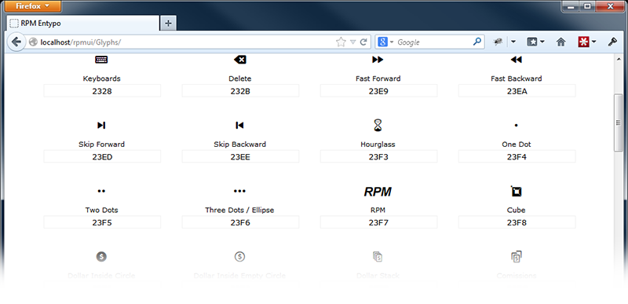

Font squirrel takes a font file and generates the entire package:
Add to your CSS this @font-face definition produced by Font Squirrel's Webfont Generator.
@font-face {
font-family: 'RPMEntypo';
src: url('rpmentypo-regular.eot');
src: url('rpmentypo-regular.eot?#iefix') format('embedded-opentype'),
url('rpmentypo-regular.woff') format('woff'),
url('rpmentypo-regular.ttf') format('truetype'),
url('rpmentypo-regular.svg#rpmentyporegular') format('svg');
font-weight: normal;
font-style: normal;
}Now you can use “RPMEntypo” as the value in any font-family: css rule.
.icon {
font-family:"RPMEntypo";
font-size:30px;
}
.icon-before:before {
font-family:"RPMEntypo";
}
.cube:before {
content:"\23F8";
}Using html entities:
<!-- This will show an icon by itself -->
<div class="icon">⏸</div>Using a :before rule:
<!-- This will show the icon before the text -->
<div class="icon-before cube">Cube</div>Select the glyphs you want and press “P” (for Preview)



Rendering in MacOS X
Rendering in Windows
There's a bug in chrome.
It's called: “Horrible font rendering with Google Web Fonts on Chrome for Windows”
Should be fixed eventually...
By moving svg up on the stack of sources to be above woff you make Chrome use it instead:
@font-face {
font-family: 'RPMEntypo';
src: url('rpmentypo-regular.eot');
src: url('rpmentypo-regular.eot?#iefix') format('embedded-opentype'),
url('rpmentypo-regular.svg#rpmentyporegular') format('svg')
url('rpmentypo-regular.woff') format('woff'),
url('rpmentypo-regular.ttf') format('truetype');
font-weight: normal;
font-style: normal;
}But...
For some reason, svg fonts are rendered with a different line-height than other fonts.
To fix this, open the SVG file on a text editor and change the descent value:
<font-face units-per-em="2048"
ascent="1638"
descent="-410" />